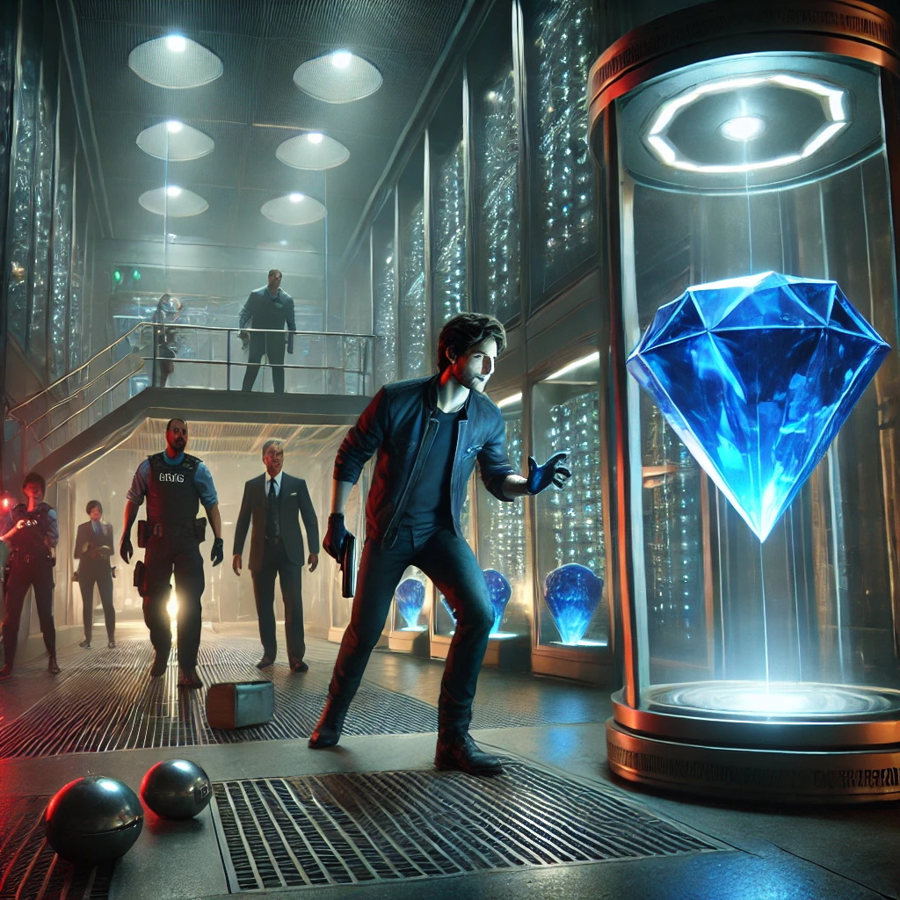

With the laser grid disabled, Marcus motioned for Jack to lift the glass case. As Jack carefully lifted it, Marcus grabbed the Night's Eye, its blue hue reflecting in his eyes. They had just a few minutes before the system would reset and the alarms would go off.
As they turned to leave, the unexpected happened. A silent alarm was triggered. They only had seconds before the entire museum was flooded with guards. Marcus cursed under his breath, but there was no time to dwell on it.
“Abort!” Marcus whispered urgently into the earpiece. Lisa immediately began covering their tracks on the security system, but Carla had already spotted guards converging on their location through the cameras.
|  | “We need to move, now!” Carla's voice crackled through the comms. |